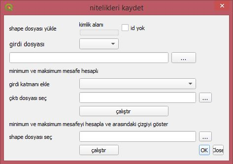
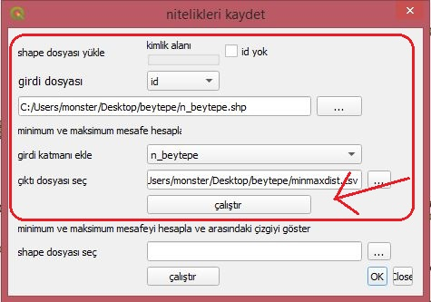
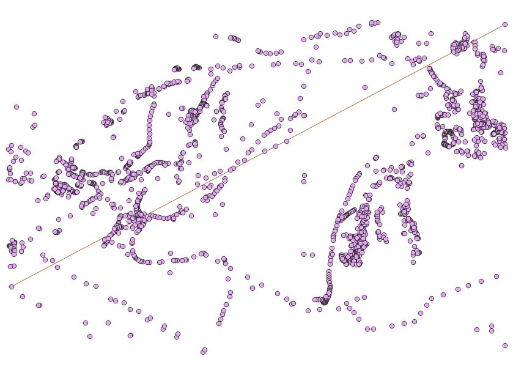
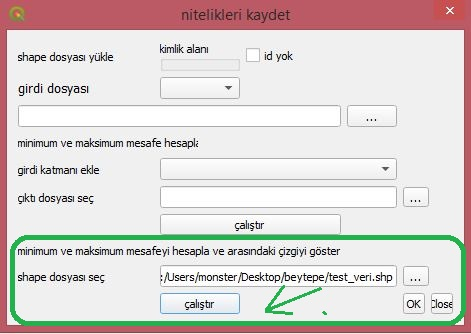
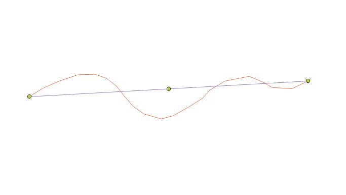
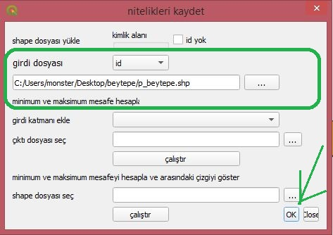
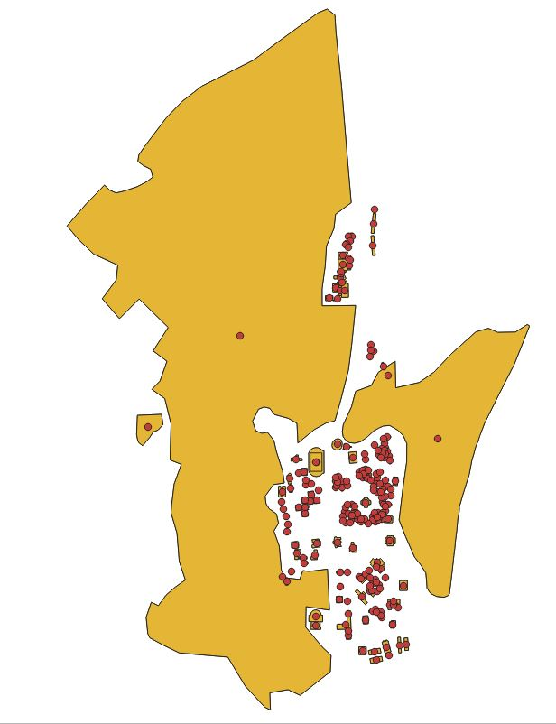

Save_attributes Tutorial¶
Our GitHub link :
https://github.com/okademirbilek/GMT-456-GIS-Programming
https://github.com/bcanplt/GMT-456-GIS-Programming
- -This plugin performs various operations according to the layer types (point, line, polygon) you enter.
In this tutorial you can find the features of the plugin and how you should use it.
1-User interface of Save Attributes plugin
This Plugin contain 3 parts
First Part¶
-When the user enter “point” layer shape file the plugin finds the maximum and minimum distance of the points and it draws a single line
 Second Part¶
-When the user enter “line” layer shape file, the plugin finds the shortest path of the line and assign start,end and middle point of the line
 Third Part¶
-When the user enter “polygon” layer shape file, the plugin finds the centroids of the polygons and show the centroits as a point
 